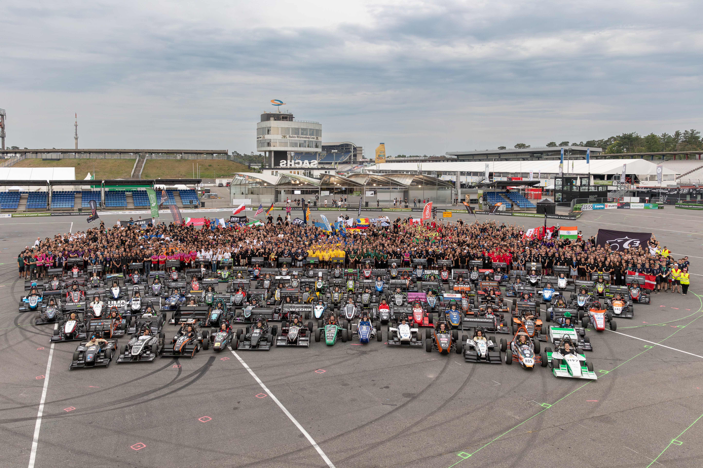

Abschlussarbeit "Formula Student"
Besondere Lernleistung im Abitur • Empirische Arbeit
Forschungsfrage
Diese empirische Arbeit beschäftigt sich mit der Forschungsfrage "Inwiefern hat Formula Student einen positiven Einfluss auf die Karriere von Studierenden der Ingenieurwissenschaften in der Automobil- und Motorsportbranche?" Diese Frage wird aus einem bildungssoziologischen Blickwinkel behandelt und es wird untersucht, inwiefern die Praktische Arbeit in einer Hochschulgruppe, in diesem Fall in einem Formula Student Team, die Ausbildung durch das Studium unterstützt.

© FSG (maru)
Was ist Formula Student
Formula Student ist ein internationaler Konstruktionswettbewerb, bei dem Studenten in Hochschulgruppen einen Rennwagen bauen. Mit diesem treten sie dann bei Wettbewerben gegen die Teams anderer Universitäten an. Bei den Wettbewerben werden zum einen die Autos in verschiedenen Disziplinen, wie zum Beispiel Beschleunigung oder der Fahrt auf einem Rundkurs, auf die Probe gestellt. Zum anderen müssen sich die Teams in theoretischen Disziplinen beweisen, wie zum Beispiel der Business-Plan Präsentation.
Methodik
In dieser Arbeit kombiniere ich verschiedene Methoden, um den Forschungsgegenstand möglichst ganzheitlich zu betrachten. Der erste Schritt ist die theoretische Quellenarbeit. Darauf aufbauend plane ich Interviews mit Beteiligten, sowie eine Umfrage unter Teammitgliedern. Außerdem arbeite ich mit dem TU Darmstadt Racing Team (DART) zusammen und bekomme dort einen Einblick in Team-Dynamiken, Abläufe, Strukturen und vieles mehr. Meine Erfahrungen aus diesem Kontext sammle ich in einem Logbuch, um sie später auszuwerten und die restlichen Ergebnisse mit ihnen ergänzen zu können.
Themen der Quellenarbeit
In der Quellenarbeit werte ich bestehende Informationen aus und schaffe mir dadurch eine theoretische Basis, auf der die anderen Methodik-Bestandteile dann aufbauen können.
Unter anderem untersuche ich, auf welche Art im Studium gelehrt wird. Dabei betrachte ich mögliche Vor- und Nachteile der vorherrschenden Lehrmethoden, inwiefern Lücken in der Berufsvorbereitung auftreten und wie Formula Student diese Lücken "stopfen" kann. Dabei ist auch die Untersuchung, welche besonderen Voraussetzungen es in der Automobil- und Motorsportbranche gibt, von großer Bedeutung. Dazu gehört ebenso die Frage, welche besonderen Fähigkeiten ein Ingenieur für eine erfolgreiche Karriere braucht.
Außerdem möchte ich einen Vergleich zu den Wettbewerben "World Solar Challenge" und "Jugend Forscht" ziehen. Davon erhoffe ich mir, besser verstehen zu können, welchen Einfluss das Format "Wettbewerb" hat. Für die World Solar Challenge habe ich mich entschieden, da sie sehr der Formula Student ähnelt. Jugend Forscht hingegen spricht eine deutlich jüngere Zielgruppe an und unterscheidet sich auch sonst deutlich von den anderen zwei Wettbewerben.
Zweck der Arbeit
Ich schreibe diese Arbeit als Besondere Lernleistung. Diese ersetzt in Kombination mit einem Kolloquium das 5. Prüfungsfach im Hessischen Abitur. Sie wird im Verlauf des letzten Schuljahres vor dem Abitur selbstständig verfasst. Sie ist somit eine Art Abschlussarbeit im Abitur. Ich lege die Arbeit an der Max-Eyth-Schule Dreieich ab.
Bei Fragen oder Interesse kontaktieren sie mich gerne:
mail@sarah-schreiner.de